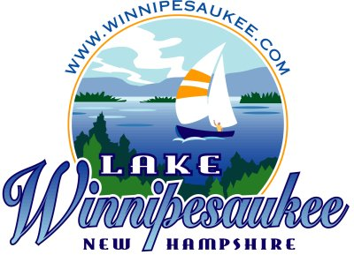

From 1999 to 2023 the WeirsCAM provided live views of Lake Winnipesaukee
from the roof of the Winnipesaukee Pier at Weirs Beach, New Hampshire.
weirscam.com
|

From 1999 to 2023 the WeirsCAM provided live views of Lake Winnipesaukee
|